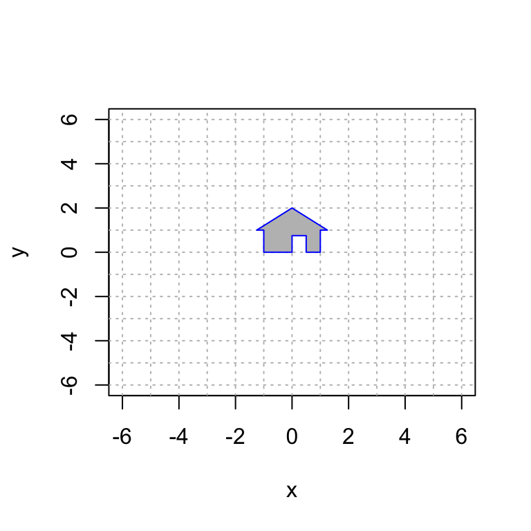
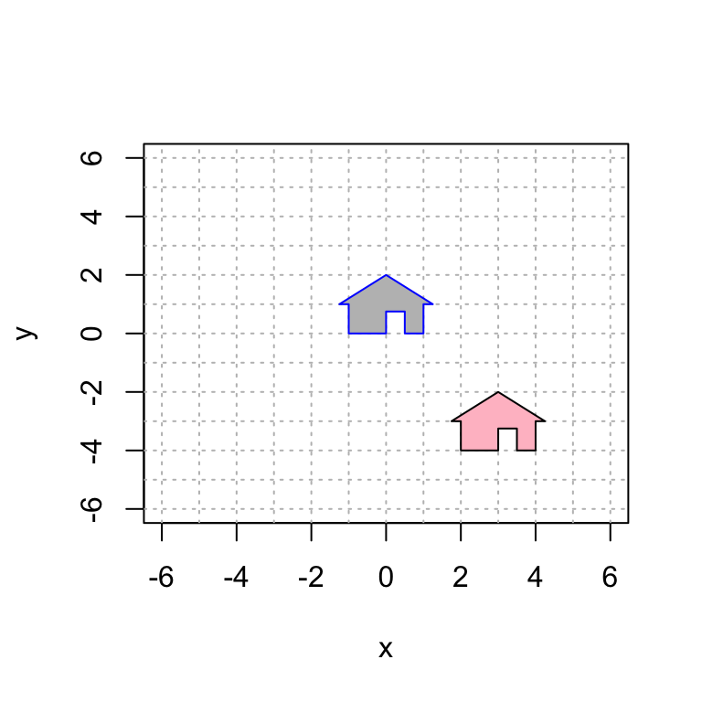
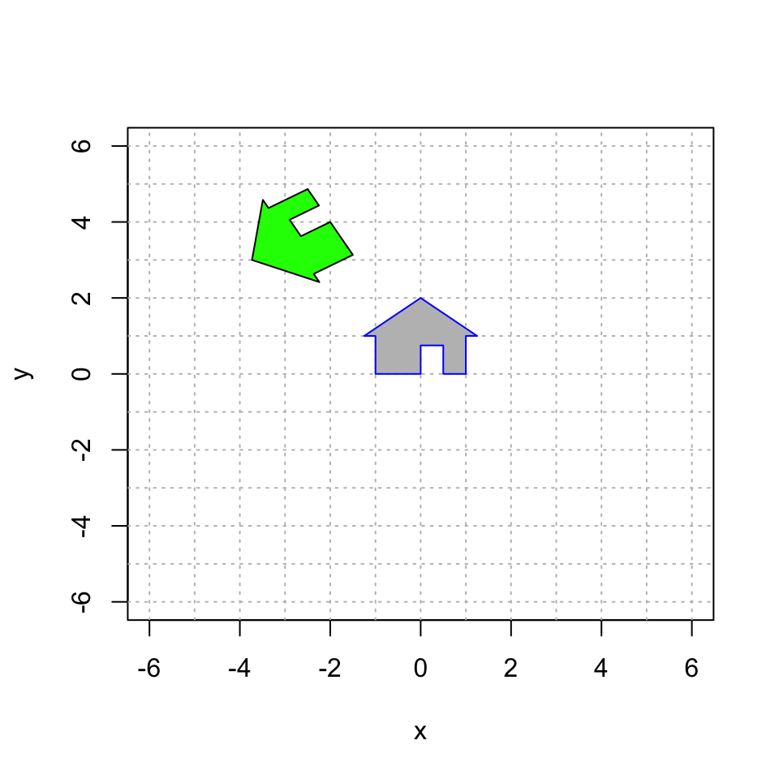
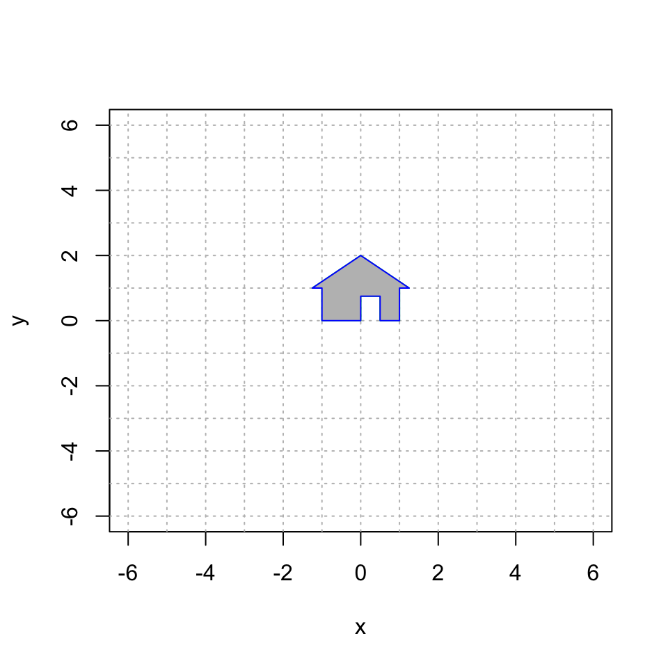
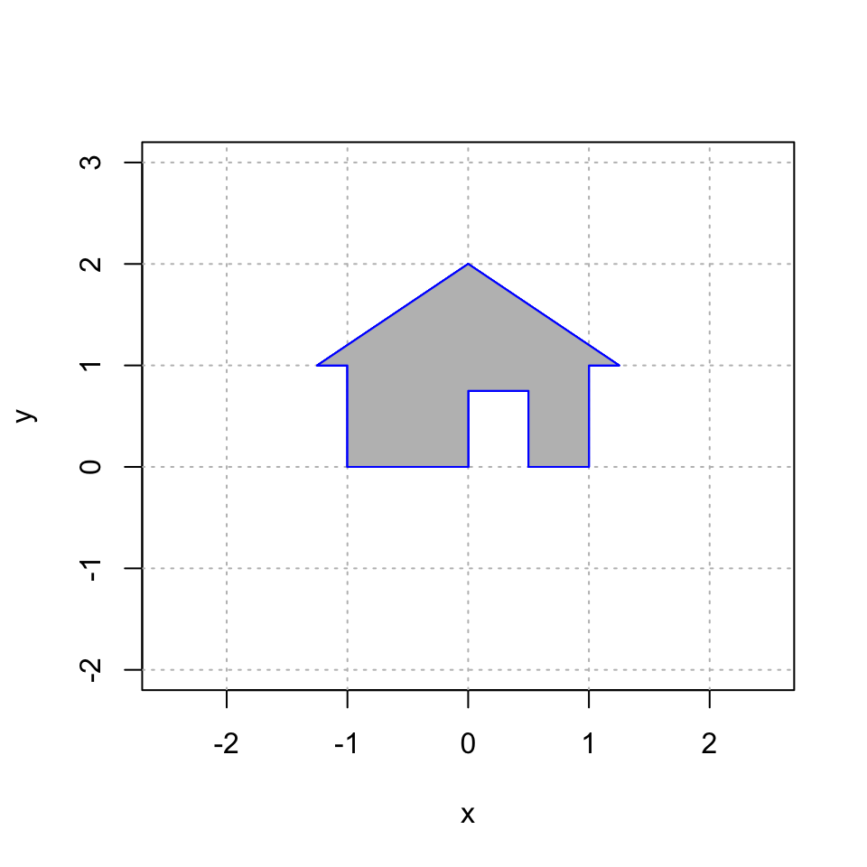

Section 18 Homogeneous Coordinates
A translation of the plane shifts every vector by a constant vector. For example, the mapping \[ S \left( \begin{bmatrix} x \\ y \end{bmatrix} \right) = \begin{bmatrix} x \\ y \end{bmatrix} + \begin{bmatrix} 3 \\ -4 \end{bmatrix} = \begin{bmatrix} x +3 \\ y - 4 \end{bmatrix} \] translates every vector in the plane by \(\begin{bmatrix} 3 \\ -4~ \end{bmatrix}\).
The bad news: This is a simple and natural mapping, but it is not a linear transformation! We know that a linear transformation must map \(\mathbb{0}\) to \(\mathbb{0}\), and that is certainly not the case when we translate! This restriction is rather limiting for computer graphics: we can never move our image away from the origin.
The good news: We can work around this problem by creating a 3D linear transformation \(T: \mathbb{R}^3 \rightarrow \mathbb{R}^3\) and then retricting our attention to a plane in this larger space. As discussed in the Homogeneous Coordinates video, we do the following:
- Embed the \(xy\)-plane \(\mathbb{R}^2\) into the plane \(z = 1\) in \(\mathbb{R}^3\).
- Translate in \(\mathbb{R}^3\) using a mapping \(T\) that maps this horizontal plane to itself. That is: \[ T \left( \begin{bmatrix} x \\ y \\ 1 \end{bmatrix} \right) = \begin{bmatrix} u \\ v \\ 1 \end{bmatrix}. \]
- When we create our plot, we use only the first two coordinates and ignore the third coordinate (which is still 1).
In summary, during our calculations, we replace the vector \(\begin{bmatrix} x \\ y \end{bmatrix}\) in \(\mathbb{R}^2\) with the homogeneous coordinate vector \(\begin{bmatrix} x \\ y \\ 1 \end{bmatrix}\) in \(\mathbb{R}^3\).
18.1 Translation
Here is my house once again. Note that we have add \(z=1\) as the third coordinate to each point. However, when plotting, we only use the first two coordinates.
# the third entry always = 1
house = cbind(c(0,0,1), c(0,3/4,1), c(1/2,3/4,1), c(1/2,0,1), c(1,0,1), c(1,1,1), c(5/4,1,1), c(0,2,1), c(-5/4,1,1), c(-1,1,1), c(-1,0,1), c(0,0,1));
# only plot the first two coordinates
plot(house[1,],house[2,],type="n",xlim=c(-6,6),ylim=c(-6,6),xlab="x",ylab="y")
abline(h=-6:6, v=-6:6, col="gray", lty="dotted")
polygon(house[1,], house[2,], col = "gray", border = "blue")
Next, we translate by \(\begin{bmatrix} 3 \\ - 4 \end{bmatrix}\) by using the linear transformation \[ T \left( \begin{bmatrix} x \\ y \\ 1 \end{bmatrix} \right) = \begin{bmatrix} 1 & 0 & 3 \\ 0 & 1 & -4 \\ 0 & 0 & 1 \end{bmatrix} \begin{bmatrix} x \\ y \\ 1 \end{bmatrix}= \begin{bmatrix} x+3 \\ y - 4 \\ 1 \end{bmatrix}. \]
Now, let’s do this calculation in R and plot the first two coordiantes:
A = cbind(c(1,0,0),c(0,1,0),c(3,-4,1))
house2 = A %*% house
# only plot the first two coordinates
plot(house[1,],house[2,],type="n",xlim=c(-6,6),ylim=c(-6,6),xlab="x",ylab="y")
abline(h=-6:6, v=-6:6, col="gray", lty="dotted")
polygon(house[1,], house[2,], col = "gray", border = "blue")
polygon(house2[1,], house2[2,], col = "pink", border = "black")
18.2 Rotation and then Translation
We know plenty of interesting 2D linear transformations, including rotation, reflection and shear mappings. We can turn any of them into a 3D transformation by appending a row and a column with a 1 in the lower right corner and zero everywhere else. For example, the 2D rotation \[ \begin{bmatrix} \cos \theta & -\sin \theta~ \\ \sin \theta & \cos \theta \end{bmatrix} \] becomes the 3D transformation \[ \begin{bmatrix} \cos\theta & -\sin\theta~ & 0 \\ \sin\theta & \cos\theta &0 \\ 0 & 0 & 1 \end{bmatrix}. \] This mapping rotates 3D space around the \(z\)-axis.
So let’s combine two operations: a rotation and a translation First, let’s rotate counterclockwise by \(2 \pi/3\) and then translate by \(\begin{bmatrix} -2 \\ 4 \end{bmatrix}\). And remember: the matrix closest to the vector acts first. So if we want to translate first, the translation matrix needs to be to the right of the rotation matrix:
\[ T \left( \begin{bmatrix} x \\ y \\ z \end{bmatrix} \right) = \begin{bmatrix} 1 & 0 & -2 \\ 0 & 1 & 1 \\ 0 & 0 & 1 \end{bmatrix} \begin{bmatrix} \cos \frac{2\pi}{3} & -\sin\frac{2\pi}{3}~ & 0 \\ \sin\frac{2\pi}{3} & \cos\frac{2\pi}{3} & 0 \\ 0 & 0 & 1 \end{bmatrix} \begin{bmatrix} x \\ y \\ z \end{bmatrix}. \]
## [,1] [,2] [,3]
## [1,] -0.5000000 -0.8660254 0
## [2,] 0.8660254 -0.5000000 0
## [3,] 0.0000000 0.0000000 1## [,1] [,2] [,3]
## [1,] 1 0 -2
## [2,] 0 1 4
## [3,] 0 0 1## [,1] [,2] [,3]
## [1,] -0.5000000 -0.8660254 -2
## [2,] 0.8660254 -0.5000000 4
## [3,] 0.0000000 0.0000000 1house3 = A %*% house
plot(house[1,],house[2,],type="n",xlim=c(-6,6),ylim=c(-6,6),xlab="x",ylab="y")
abline(h=-6:6, v=-6:6, col="gray", lty="dotted")
polygon(house[1,], house[2,], col = "gray", border = "blue")
polygon(house3[1,], house3[2,], col = "green", border = "black")
18.3 Your Turn
18.3.1 Translation and then Rotation
Let’s reverse the order of these matrices in the previous example and see that we get a different transformation. Remember, order matters: matrix multiplication is not commutative. So try changing the problem to first translating and then rotating. But first, in your group, try guessing where the house will go and then do it in R. Does the house end up where you expected it to be?
18.3.2 House of Orange
Here is a picture of a gray house and a larger, upside-down orange house. Work as a group to reproduce this image using homogeneous coordinates.

You will have to use a combination of translation, rotation, and expansion. You will do this by multiplying three matrices. Think carefully and experiment. Remember that the order of your matrices matters, and the rightmost one happens first.
#############################
# your code defining the 3x3 matrices A1 and A2
A1 = cbind(c(1,0,0), c(0,1,0), c(0,0,1))
A2 = cbind(c(1,0,0), c(0,1,0), c(0,0,1))
A3 = cbind(c(1,0,0), c(0,1,0), c(0,0,1))
A = A3 %*% A2 %*% A1
#############################
# you do not need to change this code
plot(house[1,],house[2,],type="n",xlim=c(-6,6),ylim=c(-6,6),xlab="x",ylab="y")
house2 = A %*% house
abline(h=-6:6, v=-6:6, col="gray", lty="dotted")
polygon(house2[1,], house2[2,], col = "orange", border = "green")
polygon(house[1,], house[2,], col = "gray", border = "blue")
18.3.3 House Party
This problem is on PS5.
Here is a plot of the grey house and four other houses, colored cyan, red, gold, and purple Reproduce this image using homogeneous coordinates.

#############
# your code for 3x3 matrices that create the transformed houses goes here
A.red = cbind(c(1,0,0), c(0,1,0), c(0,0,1))
A.purple = cbind(c(1,0,0), c(0,1,0), c(0,0,1))
A.gold = cbind(c(1,0,0), c(0,1,0), c(0,0,1))
A.cyan = cbind(c(1,0,0), c(0,1,0), c(0,0,1))
####################
# you do not need to change this code
house = cbind(c(0,0,1), c(0,3/4,1), c(2/4,3/4,1), c(2/4,0,1), c(4/4,0,1), c(4/4,4/4,1), c(5/4,4/4,1), c(0,8/4,1), c(-5/4,4/4,1), c(-4/4,4/4,1), c(-4/4,0,1), c(0,0,1));
plot(house[1,], house[2,], type = "n", xlim=c(-2.5,2.5),ylim=c(-2.0,3.0),,xlab="x",ylab="y")
abline(h=-4:4, v=-4:4, col="gray", lty="dotted")
house.gold = A.gold %*% house
polygon(house.gold[1,], house.gold[2,], col = "gold", border = "blue")
house.cyan = A.cyan %*% house
polygon(house.cyan[1,], house.cyan[2,], col = "cyan", border = "blue")
house.red = A.red %*% house
polygon(house.red[1,], house.red[2,], col = "red", border = "blue")
house.purple= A.purple %*% house
polygon(house.purple[1,], house.purple[2,], col = "purple", border = "blue")
polygon(house[1,], house[2,], col = "gray", border = "blue")